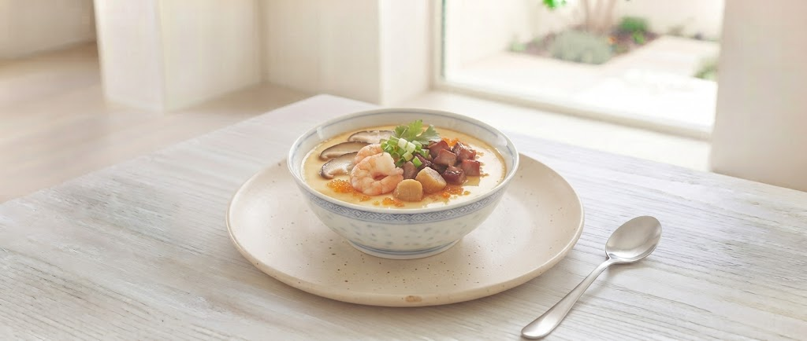

Story of CAREN
オーナーシェフ:荒木 徹弥
小学生の頃、母に作ったインスタントラーメンを褒められたあの日から。料理の道は始まりました。
大阪のあべの辻調理師専門学校で学び、14年間の修業、そしてホテル勤務。麻婆豆腐一つをとってもあらゆる技法を学び、自らの型を磨き続けました。
「わざわざ料理を食べに来てもらえる店にしたい」。その想いから、あえて豪雪を選れた山形市富の中に、2003年「CAREN」をオープン。以来、宣伝なし。お客様の口コミだけが、私たちの誇りです。

こだわり抜いた料理と、上質な空間
本格的な技術をベースにしながらも、従来の枠にとらわれない洗練された一皿を提供。月替わりのメニューで、常に新しい発見を。
山形芸術工科大学のアート作品が飾られた店内。静かで落ち着いたテーブル席は、まさに「大人の中華料理店」にふさわしい上質さ。
シェフの実家から届く野菜や、朝採れの地産地消食材。素材の味を最大限に引き出す技術が、口コミでの高い評価に繋がっています。
小学生の頃、母に作ったインスタントラーメンを褒められたあの日から。料理の道は始まりました。
大阪のあべの辻調理師専門学校で学び、14年間の修業、そしてホテル勤務。麻婆豆腐一つをとってもあらゆる技法を学び、自らの型を磨き続けました。
「わざわざ料理を食べに来てもらえる店にしたい」。その想いから、あえて豪雪を選れた山形市富の中に、2003年「CAREN」をオープン。以来、宣伝なし。お客様の口コミだけが、私たちの誇りです。
「本格中華をご自宅でも」準備中の新サービス
看板メニューのエビチリをはじめ、店内でしか味わえなかった「かれん」の本格創作中華をご家庭やホームパーティーで。特別な日のお祝いにもぴったりのオードブルセットも企画・準備中です。
自慢の「中華風茶わん蒸し」や特製ソースを全国の皆様へお届け。山形の恵みとプロの技が詰まった極上の味を、大切な方への贈答用ギフトとしてもご利用いただけるよう全国配送ラインを開発中です。
Excellent
ランチセットがとってもお得!特に前菜が手がかかっていて、みためもおいしいし、地産地消だし、幸せ感じます。
Beautiful
ディナーはコースのみ。盛付けも綺麗ですし味も申し分ありません!
Special
誕生日で利用。夜は落ち着いていてゆっくりできました。食事もむちろんどれも美味しかったです。
Hospitality
シェフのご対応もとても親切で、素敵な時間を過ごすことができました。大切な人との時間におすすめ。
Q. 予約は必要ですか?
A. ディナーはコースのみの営業となり、基本的に予約が必要です。ランチも人気のため、事前にお電話いただけると確実です。
Q. どのようなシーンに合いますか?
A. 「大人の中華」をコンセプトにしており、誕生日や記念日、デート、あるいは自分へのご褒美ランチなど、少し特別な日に最適です。
Q. 駐車場はありますか?
A. はい。店舗前に専用駐車場がございますので、お車でも安心してお越しいただけます。